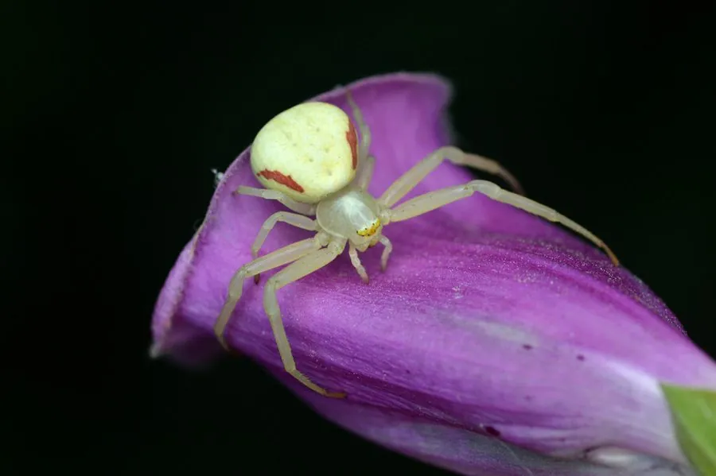

蛛形动物 · 动物界
弓足梢蛛 Misumena vatia

欧洲与北美常见的蟹蛛，能根据花朵颜色在白色和黄色之间缓慢变色，守候在花上伏击访花昆虫，是花园中的益虫。
- 分类
- 门节肢动物门纲蛛形纲目蜘蛛目科蟹蛛科属梢蛛属
- 栖息环境
- 草地、花园、农田中白色或黄色的花朵上
- 地理分布
- 欧洲、北美洲及亚洲北部的温带地区
- 保护级别
- IUCN 暂无评估；中国未列入国家重点保护名录
物种志
弓足梢蛛雌蛛体长 8–10 毫米，雄蛛仅 3–4 毫米，雌雄体型差异很大。雌蛛身体宽扁，前两对步足特别长，像螃蟹的螯一样张开，便于抱住猎物；体色可在白色和黄色之间缓慢变化，以匹配所停留花朵的颜色，变化过程需要几天时间。
它分布于欧洲、北美以及亚洲北部的草地、花园和农田，常停留在白色或黄色的花朵上守候，捕食蜜蜂、蝇类、蝴蝶等访花昆虫，是典型的伏击型蜘蛛。雌蛛在交配后产下数十至上百枚卵，把卵囊藏在折叠的叶片中并守护，直到幼蛛孵化。弓足梢蛛对人没有危害，毒性很弱，是花园中帮助控制害虫的有益蜘蛛，也因能在花朵上“变色”而受到自然观察者的喜爱。
形态与习性
- 食性蜜蜂、蝇类、蝴蝶等访花昆虫
- 体长雌蛛 8–10 mm，雄蛛 3–4 mm
- 寿命约 1 年
- 繁殖卵生，数十至上百枚，雌蛛守护卵囊
- 活动节律昼行性，守候在花上伏击猎物
- 特点体色能在白色和黄色之间缓慢变化
趣味知识
- 弓足梢蛛能根据花朵颜色在白色和黄色之间缓慢变色，过程需要数天。
- 雌蛛比雄蛛大得多，常常待在花上守株待兔，伏击访花的蜜蜂和蝇类。
- 它对人没有危害，是花园和农田里帮助控制害虫的有益蜘蛛。